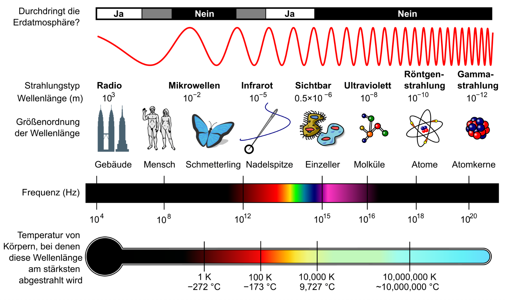

{kind=link}
{kind=link}
{kind=link}
{kind=link}
{kind=link}
{kind=link}
{kind=link}
{kind=link}
- 1
- Hier importieren wir ein Objekt aus einer Bibliothek zum Herstellen einer Verbindung mit dem Master Brick.
- 2
- Hier importieren wir ein weiteres Objekt, das wir zur Darstellung der LED als Python-Objekt benötigen.
- 3
- Die Verbindung erfolgt über eine sogenannte IP-Verbindung, die wir hier als Objekt erstellen.
- 4
-
Mit
connectstellen wir eine Verbindung zum angeschlossenen Master Brick her. - 5
-
Schließlich holen wir uns eine virtuelle Instanz des RGB LED Bricklets, indem wir die UID nennen und sagen, welche Verbindung (
ipcon) genutzt werden soll.
1 Farben 🌈
Das erste Kapitel hat es gleich in sich: Wir lernen etwas über Farben und wie sie im Computer funktionieren. Gleichzeitig steigen wir in die Programmierung ein und schreiben unser erstes Programm. Dabei nutzen wir eine LED und erzeugen einen Regenbogenfarbverlauf.
Lernziele
Unsere wichtigsten Lernziele in diesem Kapitel sind:
- Wir verstehen, wie Farben im Computer funktionieren.
- Wir schreiben unser erstes Programm am Beispiel einer LED-Steuerung.
- Wir lernen Schleifen in der Programmierung kennen.
Experimentaufbau
Bereit für euer erstes Hardware-Experiment? Perfekt! Ihr braucht dafür eine LED (RGB LED Bricklet 2.0) und einen Mikrocontroller (Master Brick 3.2). Befestigt beide Bauteile mit Abstandshaltern auf einer Montageplatte, wie in Abbildung 1.1 gezeigt. Zwei Schrauben pro Gerät reichen völlig. Denkt an die kleinen, weißen Unterlegscheiben aus Kunststoff. Sie schützen eure Platinen vor Druckstellen.
Neben der Hardware benötigt ihr auch die passende Software. Diese solltet ihr bereits installiert haben. Falls nicht, schaut im Abschnitt zu den Voraussetzungen vorbei. Dort ist alles genau beschrieben. Im Folgenden gehe ich davon aus, dass ihr alles am Laufen habt.
1.1 Erste Schritte mit der LED
Im ersten Schritt wollen wir die LED und ihre Funktionen testen! Das geht ganz leicht mit dem Brick Viewer. Schließt zuerst den Master Brick über das USB-Kabel an euren Computer an und öffnet den Brick Viewer. Klickt dann auf den Connect-Button.
Wenn alles geklappt hat, zeigt euch der Brick Viewer alle angeschlossenen Geräte in Tabs an. Schaut euch Abbildung 1.3 an – so etwa sollte es aussehen.
Wechselt nun zum Tab der RGB LED. Hier könnt ihr über unterschiedliche Wege die Farbe der LED einstellen. Mehr kann eine LED nicht!
Mit den drei Schiebereglern steuert ihr die einzelnen Farbkanäle – Rot, Grün, Blau. Der Wertebereich: 0 bis 255. Warum gerade diese die Farben und Zahlen? Gute Frage. Die Antwort kommt weiter unten.
Fazit: Der Brick Viewer ist top zum Rumprobieren. Aber wenn ihr echte Projekte umsetzen wollt, müsst ihr programmieren lernen. Also los!
1.2 Unser erstes Programm
Wie verbinden wir uns über Programm mit der LED und setzen ihre Farbe? Die Antwort darauf findet ihr im folgenden kurzen Codebeispiel.
1.2.1 Programme
Zunächst klären wir den Begriff Programm. Ein Programm ist eine Abfolge von Anweisungen, die ein Computer ausführt, um eine bestimmte Aufgabe zu erledigen. In unserem Fall ist das Programm später dafür zuständig, mit der LED zu interagieren und sie in verschiedenen Farben leuchten zu lassen. Programme werden in Programmiersprachen geschrieben, die es uns ermöglichen, dem Computer präzise Anweisungen zu geben. Wir verwenden in diesem Buch die Programmiersprache Python, die sich besonders gut für Einsteiger eignet und gleichzeitig mächtig genug ist, um komplexe Aufgaben zu lösen.
Wenn wir ein Programm ausführen, arbeitet der Computer die Anweisungen Schritt für Schritt von oben nach unten ab. Die Nummerierung der Zeilen verdeutlicht das sehr schön. Der Computer beginnt bei Zeile 1 und arbeitet die Befehle Zeile für Zeile bis nach unten ab.
Es gibt Befehle, die den Computer von dieser linearen Abfolge abweichen lassen, etwa Schleifen oder Verzweigungen. Diese lernen wir später kennen.
1.2.2 Boilerplate Code
Der Codeausschnitt in Listing 1.1 wird uns im Verlauf dieses Buches immer wieder begegnen. Wir benötigen ihn, um uns am Anfang des Programms mit den Geräten zu verbinden, die wir für unsere Anwendung benötigen. In der Informatik nennen wir solchen Code, den wir häufig in der gleichen Form benötigen und fast eins zu eins kopieren können, auch Boilerplate-Code. Wundert euch also nicht, wenn ich diesen Begriff ab und an mal verwende. Jetzt wisst ihr, was gemeint ist.
1.2.3 Bibliotheken
Beginnen wir in den ersten beiden Zeilen. Hier seht ihr zwei sehr ähnliche Befehle, die mit dem Schlüsselwort from beginnen. Nach dem Schlüsselwort from folgt der Name einer Bibliothek, aus der wir ein für unser Programm benötigtes Objekte importieren. Die Kombination der Schlüsselwörter from ...import lässt sich also wörtlich übersetzen: “Aus der Bibliothek X importiere das Objekt Y”.
Eine Bibliothek in einer Programmiersprache ist die Bündelung und Bereitstellung von Funktionen, Klassen oder Konstanten. Eine Bibliothek könnt ihr euch vorstellen wie einen Werkzeugkasten: Sie enthält fertige Werkzeuge (Funktionen und Klassen), damit ihr nicht alles von Grund auf selbst programmieren müsst. Tinkerforge stellt uns genau solche Werkzeuge bereit, damit wir schnell und unkompliziert mit den Geräten loslegen können. Für jedes Gerät gibt es in der Tinkerforge-Bibliothek eine eigene Klasse, über die wir auf die Funktionen jedes Geräts zugreifen können.
1.2.4 Klassen und Objekte
Mit from ... import importieren wir also etwas aus einer Bibliothek. Soweit so gut. Aber was bedeutet das genau? Mit importieren ist konkret gemeint, dass wir dem Programm mitteilen, dass wir vorhaben, die genannten Dinge in unserem Programm zu verwenden, und dass sie deshalb am besten schon einmal geladen werden sollten. Ob wir diese Dinge später wirklich nutzen steht auf einem anderen Blatt.
In dem Fall der ersten beiden Zeilen unseres Programms von oben sind es zwei Klassen, deren Verwendung wir ankündigen. Die erste Klasse heisst IPConnection und die zweite BrickletRGBLEDV2. Der Begriff Klasse ist hier analog zum Begriff Kategorie zu verstehen. Wir können zu einer Klasse gehörige Objekte erzeugen, und alle Objekte der selben Klasse verhalten sich gleich und haben die gleichen Funktionen. Das verstehen wir am besten an einem einfachen Beispiel.
Stellt euch vor, ihr habt eine Klasse namens Auto. Diese Klasse beschreibt alle Eigenschaften und Funktionen, die ein Auto haben kann, wie etwa fahren(), bremsen() oder tanken(). Diese Dinge sollen für jedes Auto gleich ablaufen. Jedes konkrete Auto in der Welt ist ein Objekt dieser Klasse. Wir können also sagen: “Mein Auto ist ein Objekt der Klasse Auto.” Jedes Auto hat neben den Funktionen die gleichen Eigenschaften wie Farbe, Marke und Modell. Aber jedes Auto kann andere Werte für diese Eigenschaften haben.
Genauso verhält es sich mit den Klassen, die Tinkerforge für uns bereitgestellt hat. Die Klasse IPConnection beschreibt, wie wir eine Verbindung zu einem Mikrocontroller herstellen können, und die Klasse BrickletRGBLEDV2 beschreibt, wie wir mit der LED interagieren können. Wenn wir ein Objekt dieser Klasse erstellen, können wir alle Funktionen nutzen, die in der Klasse definiert sind. Eine LED muss nicht fahren oder bremsen wie ein Auto. Dafür hat sie andere Funktionen, wie etwa set_rgb_value(), die uns erlaubt, die Farbe der LED zu ändern. Eine Eigenschaft jeder LED ist ihre UID, die eindeutig ist und uns hilft, sie im System zu identifizieren.
1.2.5 Schlüsselwörter
Soeben haben wir mit from und import unsere ersten beiden Schlüsselwörter in Python kennengelernt! Aber was bedeutet das genau? Ein Schlüsselwort, das wir im Englischen auch keyword oder reserved keyword nennen, ist ein Begriff, der in der jeweiligen Programmiersprache eine feste Bedeutung hat und deshalb nicht anderweitig verwendet werden darf. Wir werden gleich noch sehen, dass wir bei der Programmierung auch häufig Namen vergeben müssen, etwa für Variablen oder Funktionen. Diese Namen dürfen nicht wie ein Schlüsselwort lauten, ansonsten funktioniert unser Programm nicht wie gewünscht. Welche Schlüsselwörter es in Python gibt, könnt ihr hier nachschauen.
Im Codeausschnitt oben laden wir zuerst das Objekt für die Verbindung zum angeschlossenen Mikrocontroller, die über eine IP-Verbindung hergestellt wird. Was das genau ist? Später mehr dazu. Zusätzlich zur IPConnection laden wir anschließend noch die benötigen Klassen für die Geräte, die wir in unserem aktuellen Setup verwenden wollen. In diesem Kapitel ist das nur die LED, in späteren Experimenten werden es auch mal mehrere Geräte sein.
1.2.6 Objekte erzeugen
In Listing 1.1 in Zeile 4 erzeugen wir ein Objekt der Klasse IPConnection. Die fertige Instanz - so nennen wir ein Objekt, das aus einer Klasse erzeugt wurde - speichern wir auf einer Variable mit dem Namen ipcon. Diesen Namen haben wir uns selbst ausgedacht, damit wir später darauf zugreifen können. Wir hätten auch einen anderen Namen wählen können.Eine Variable ist also ein Platzhalter für einen Wert, den wir später im Programm verwenden wollen. In diesem Fall ist ipcon der Platzhalter für die Verbindung zu unserem Mikrocontroller. Was eine Variable technisch ist, lernen wir später noch genauer kennen.
1.2.7 Methoden
Über das Objekt ipcon können wir nun eine Verbindung zu unserem Mikrocontroller herstellen. Das geschieht in Zeile 5 mit der Methode connect(). Eine Methode ist eine Funktion, die zu einem Objekt gehört. Wie etwa fahren() oder bremsen() in unserem Auto-Beispiel.
Wir können Methoden aufrufen, um eine bestimmte Aktion auszuführen. In diesem Fall stellen wir eine Verbindung zum Mikrocontroller her, indem wir die Adresse und den Port angeben, über den die Verbindung hergestellt werden soll. In unserem Fall ist das “localhost”, was für die lokale Maschine steht, und Port 4223, der durch den Brick Daemon standardmäßig so konfiguriert ist. Der Aufruf einer Methode erfolgt immer mit dem Punkt . nach dem Objekt, gefolgt vom Namen der Methode und den Klammern (), in denen wir eventuell benötigte Parameter angeben.
Eine Methode ist letztlich eine Funktion, die zu einem Objekt gehört. Zu einem späteren Zeitpunkt schreiben wir unsere eigenen Funktionen und lernen dann noch viel mehr darüber.
1.2.8 Ein Objekt für die LED
In Zeile 6 erzeugen wir schließlich ein Objekt der Klasse BrickletRGBLEDV2. Dieses Objekt repräsentiert unsere LED und ermöglicht es uns, mit ihr zu interagieren. Wir nennen das Objekt led, was kurz und klar ist. Auch hier haben wir uns den Namen selbst ausgedacht, um später darauf zugreifen zu können. Auch wenn wir grundsätzlich Variablennamen frei wählen können, sollten sie immer so gewählt werden, dass sie den Inhalt der Variable beschreiben. Das macht es später einfacher, den Code zu verstehen. Gleichzeitig gibt es in Python einige Regeln, die wir bei der Benennung von Variablen beachten müssen. Dazu gehören etwa, dass Variablennamen nicht mit einer Zahl beginnen dürfen und keine Leerzeichen enthalten dürfen. Eine ausführliche Liste der Regeln findet ihr hier.
1.2.9 Zusammenfassung unseres ersten Programms
Damit haben wir unser erstes Programm von oben nach unten erläutert und dabei schon viele wichtige Konzepte der Programmierung kennengelernt:
| Programme | Abfolge von Anweisungen, die nacheinander ausgeführt werden. |
| Boilerplate Code | Standard-Code, den man immer wieder braucht. |
| Importieren von Bibliotheken | Sammlung von fertigen Code-Elementen. |
| Schlüsselwörter | Reservierte Begriffe der Programmiersprache. |
| Klassen und Objekte | Kategorien und deren konkrete Instanzen. |
| Methoden und Funktionen | Funktionen, die zu einem Objekt gehören. |
| Variablen | Platzhalter für Werte. |
1.2.10 Und jetzt?
Wir haben nun eine digitale Repräsentation unserer LED in Python. Wir können die LED jetzt zum Leuchten bringen, indem wir eine Methode der Klasse BrickletRGBLEDV2, die set_rgb_value() heißt, verwenden. Diese Methode erwartet drei Parameter: Rot, Grün und Blau. Mit diesen Parametern können wir die Farbe der LED einstellen.
led.set_rgb_value(0, 255, 0)- 1
- Setzt die LED auf grün. R = 0, G = 255, B = 0. Logisch, oder?
Moment mal … Wo steht hier eigentlich grün? Steht da gar nicht. Stattdessen drei Zahlen. Willkommen bei der RGB-Farbkodierung. Jede Farbe besteht aus drei Werten zwischen 0 und 255: Rot, Grün, Blau. Null ist nix. 255 ist volle Power. Alles 0? Schwarz. Alles 255? Weiß. Nur Grün auf 255? Na klar: grün.
Aber warum machen wir das mit Zahlen? Weil Computer nun mal mit Zahlen arbeiten. Das ist einer der zentralen Gedanken dieses Buches: Wie übersetzen wir die Welt in etwas, das ein Computer versteht?
Warum aber ist das so? Warum kodieren wir in der Informatik jede Farbe mit drei Zahlen? Warum überhaupt mit Zahlen? Hier kommen wir zu einer zentralen Frage dieses Buches: Wie bilden Computer Informationen ab?
Vorher müssen wir aber kurz zurück in die Schule.
1.3 Farben und Licht
Physik ist vielleicht schon eine Weile her. Erinnern wir uns dennoch kurz, was Licht ist und wie Farben damit zusammenhängen. Licht ist elektromagnetische Strahlung. Das bedeutet, es handelt sich um gekoppelte Schwingungen elektrischer und magnetischer Felder, die sich mit Lichtgeschwindigkeit ausbreiten. Vereinfacht können wir uns Licht als Wellen vorstellen, die sich durch den Raum bewegen. Diese Wellen haben unterschiedliche Frequenzen und Wellenlängen. Das sichtbare Licht ist nur ein kleiner Teil des gesamten elektromagnetischen Spektrums, das von Radiowellen über Infrarotstrahlung bis hin zu Röntgenstrahlen und Gammastrahlen reicht.
Bei Wellen unterscheiden wir zwischen der Frequenz (wie oft die Welle pro Sekunde schwingt) und der Wellenlänge (der Abstand zwischen zwei aufeinanderfolgenden Wellenbergen). Die Frequenz und die Wellenlänge sind umgekehrt proportional: Je höher die Frequenz, desto kürzer die Wellenlänge und umgekehrt.
Frequenzen messen wir in Hertz (Hz), wobei 1 Hz einer Schwingung pro Sekunde entspricht. Das sichtbare Licht hat Frequenzen im Bereich von etwa 430 THz (Terahertz) bis 750 THz. Die Wellenlängen des sichtbaren Lichts liegen zwischen etwa 400 nm (Nanometer) für violettes Licht und etwa 700 nm für rotes Licht. Um sich das vorzustellen: Ein Nanometer ist ein Milliardstel Meter. Zum Vergleich: Ein menschliches Haar hat einen Durchmesser von etwa 80.000 bis 100.000 Nanometern. Die Abstände zwischen den Wellenlängen des sichtbaren Lichts sind also extrem klein.
Was bedeutet das nun für eine LED? Eine LED (Light Emitting Diode) ist ein Halbleiterbauelement, das Licht erzeugt, wenn elektrischer Strom hindurchfließt. Die Farbe des Lichts hängt von Eigenschaften des Halbleitermaterials ab, aus dem die LED besteht. Verschiedene Materialien emittieren Licht bei unterschiedlichen Wellenlängen, was zu verschiedenen Farben führt. Zum Beispiel emittiert eine rote LED Licht mit einer Wellenlänge von etwa 620-750 nm, während eine grüne LED Licht mit einer Wellenlänge von etwa 495-570 nm emittiert.

{kind=link}
Die RGB LED besteht in Wirklichkeit aus drei einzelnen LEDs: einer roten, einer grünen und einer blauen. Jede dieser LEDs kann unabhängig voneinander angesteuert werden, um verschiedene Farben zu erzeugen. Mehr Stromstärke bedeutet mehr Intensität der jeweiligen Farbe. Durch die Kombination der drei Grundfarben Rot, Grün und Blau in unterschiedlichen Intensitäten können wir eine Vielzahl von Farben mischen. Das ist das Prinzip der additiven Farbmischung: Wenn wir alle drei Farben mit voller Intensität leuchten lassen, erhalten wir Weiß. Wenn wir keine Farbe leuchten lassen, erhalten wir Schwarz. Klar, die LED sind dann alle aus.
1.4 Farben im Computer
Nun wissen wir, warum die Methode set_rgb_value() drei Parameter erwartet: Rot, Grün und Blau. Diese Parameter sind die Intensitäten der jeweiligen Farbe, die wir in unserem Programm angeben. Mit den Werten 0 bis 255 können wir jede Farbe im sichtbaren Spektrum erzeugen.
Wie kommt es aber zu der merkwürdigen Zahl 255? Warum nicht einfach 0 bis 100? Das liegt daran, wie ein Computer grundsätzlich Werte speichert und wie dieser Speicher organisiert ist. Kurz gesagt: Der Wertebereich 0 bis 255 passt genau in ein sogenanntes Byte. Ein Byte ist eine Speichereinheit, die aus 8 Bits besteht. Ein Bit kann entweder 0 oder 1 sein. Mit 8 Bits können wir also \(2^8 = 256\) verschiedene Werte darstellen, von 0 bis 255. Das ist genau der Bereich, den wir für die RGB-Farbkodierung verwenden. Dazu lernen wir später noch mehr.
Wir halten also fest, dass sich ein Farbwert im Computer aus drei Zahlen zusammensetzt, die jeweils zwischen 0 und 255 liegen. Das gilt für unsere LED, aber auch für Pixel in TVs, Smartphones, digitalen Foto oder Monitoren. All diese Dinge beleuchten wir später noch genauer.
1.5 Farben mischen
Klingt alles theoretisch sehr gut. Aber wie sieht es mit der Praxis aus? Probieren wir es aus und mischen zwei Farben mit voller Intensität!
led.set_rgb_value(255, 255, 0)Was macht der Befehl? Welche Farbe kommt dabei heraus? Probiert es einfach mal aus!
1.5.1 Additive Farbmischung
Ihr solltet alle eure LEDs in Gelb aufleuchten sehen. In der additiven Farbmischung mischen wir Rot und Grün und erhalten dadurch Gelb. Gelb ist heller als die beiden Farben Rot und Grün, was kein Zufall ist. Das ist das Prinzip der additiven Farbmischung: Wenn wir zwei Farben mit voller Intensität leuchten lassen, erhalten wir eine neue Farbe, die stest heller ist als die Ursprungsfarben. Wir fügen mehr Licht hinzu. Wenn wir alle drei Farben mit voller Intensität mischen erhalten wir schließlich Weiß.
led.set_rgb_value(255, 255, 255)Am anderen Ende des Spektrums erzeugen drei Nullen die Farbe Schwarz:
led.set_rgb_value(0, 0, 0)1.5.2 Subtraktive Farbmischung
Ihr könnt euch merken, dass wir im Kontext von Computern oft von additiver Farbmischung sprechen, weil Bildschirme Licht erzeugen. Durch das Mischen der drei Farbkanäle entstehen neue Farben gemäß der additiven Farbmischung, also stets heller als ihre Grundfarben. Daneben gibt es aber noch die subtraktive Farbmischung. Sie funktioniert anders, nämlich genau umgekehrt. Statt beim Mischen Licht hinzuzufügen, nehmen wir Licht weg.
Erinnert ihr euch an euren Farbkasten aus der Grundschule? Dort habt ihr auch Farben gemischt, um neue Farben zu erzeugen, die euer Farbkasten nicht direkt mitgeliefert hat. Was hat im Farbenkasten die Mischung aus Rot und Grün ergeben? Sicher nicht Gelb - eher Braun. Eine dunklere Farbe. Das liegt daran, dass wir es hier nicht mit additiver, sondern mit subtraktiver Farbmischung zu tun haben. Bei der subtraktiven Farbmischung mischen wir Pigmente, die Licht absorbieren und reflektieren. Das Mischen von Farben fungiert hier wie ein Filter: Bestimmte Teile des Lichtspektrums werden nicht mehr reflektiert, sondern absorbiert und sind damit nicht mehr sichtbar. Das Ergebnis einer Mischung zweier Farben ergibt in der subtraktiven Farbmischung also stets eine dunklere Farbe. Genau umgekehrt zur additiven Farbmischung.
Was passiert mit dem absorbierten Licht? Es wird in eine andere Form der Energie umgewandelt, nämlich Wärme. Deshalb wird eine schwarze Oberfläche auch besonders heiß, wenn die Sonne darauf knallt. Sie absorbiert das gesamte Lichtspektrum und wandelt es in Wärme um. Dagegen wirken weiße Oberflächen fast wie Klimaanlagen. Es ist kein Zufall, dass wir in sonnigen Erdteilen viele weiße Fassaden sehen.
Wenn wir alle Farben mischen ergibt die subtraktive Farbmischung Schwarz, weil kein Licht mehr reflektiert wird. Alles Licht wird aufgesogen und nichts kommt mehr zurück. Das ist ein anderes Prinzip als bei der additiven Farbmischung, bei der wir Lichtquellen kombinieren, um neue Farben zu erhalten.
{kind=link}
{kind=link}
In Abbildung 1.6 sehen wir die beiden Farbmischungsarten im Vergleich. In Abbildung 1.6 (b) sehen wir die drei Grundfarben, die wir bei der subtraktiven Variante benötigen, um daraus alle weiteren Farben zu erhalten. Das sind Cyan, Magenta sowie Gelb. Im Englischen ist die Abkürzung CMY, wo das “Y” für Yellow steht. In der additiven Farbmischung sind es, wie oben schon gesehen, Rot, Grün und Blau. Wenn ihr Abbildung 1.6 (a) betrachtet dann erkennt ihr, dass genau diese drei Farben durch das Mischen jeweils zweier Grundfarben in der additiven Farbmischung entstehen. Und umgekehrt gilt das gleiche Prinzip! Ob das Zufall ist?
In der additiven Farbmischung entsteht Gelb durch das Mischen von Rot und Grün, wobei Blau fehlt. Im Umkehrschluss bedeutet das: Gelbes Licht enthält keine blaue Komponente, es reflektiert also kein Blau. In der subtraktiven Farbmischung (wie beim Farbkasten) wird Gelb erzeugt, indem Blau aus weißem Licht herausgefiltert wird – Gelb reflektiert also kein Blau, sondern absorbiert es. Gelb kann also auch als Blaufilter gesehen werden. Das erklärt, warum ein gelber Gegenstand unter blauem Licht dunkel erscheint: Er kann das blaue Licht nicht reflektieren.
Jetzt können wir auch erklären, warum Farbdrucker vier unterschiedliche Kartuschen benötigen (Abbildung 1.7). Mit den Grundfarben der subtraktiven Farbmischung Cyan, Magenta und Gelb können wir jede beliebige Farbe mischen. Zusätzlich haben Drucker eine Kartusche für Schwarz, um erstens ein sattes Schwarz drucken zu können und zweitens die Farbkartuschen zu schonen. Denn schließlich müssen alle drei Farben gemischt werden, um Schwarz zu erhalten. Und weil viele Drucksachen schwarz enthalten (oder sogar ausschließlich) ist eine schwarze Kartusche einfach effizienter. Die Farbe Schwarz wird bei Druckerkartuschen als Key bezeichnet und mit “K” abgekürzt. Wir sprechen daher auch von CMYK.
{kind=link}
Farben spielen eine so wichtige Rolle bei der Arbeit mit Computern. Deshalb lohnt es sich, ein wenig über die Hintergründe von Farben und deren Mischung zu verstehen. Wir werden später noch lernen, wie Bildschirme Farben darstellen. Spätestens dann wird uns das Thema der Farbmischung wieder begegnen.
Ab jetzt wollen wir weiter mit unserer LED experimentieren und den RGB-Code, mit dem Computer Farben abbilden, praxisnah verstehen. Bisher haben wir gelernt, dass wir die Farbe der LED über die Methode set_rgb_value() verändern können, wenn wir wissen, welcher RGB-Code unsere gewünschte Farbe repräsentiert. Da wir jetzt mehr über die Farbmischung wissen, können wir die LED also ganz einfach in der Farbe Magenta leuchten lassen:
led.set_rgb_value(255, 0, 255)Gemäß der Theorie der additiven Farbmischung (Abbildung 1.6 (a)) müsste Rot und Blau Magenta ergeben. Probiert es aus!
1.6 Schleifen
Das deklarierte Ziel unseres ersten Experiments ist es, einen Regenbogenfarbverlauf zu erzeugen. Dazu müssen wir die Farbe der LED kontinuierlich ändern, sodass sie von Rot über Gelb, Grün, Cyan, Blau und Violett wieder zurück zu Rot wechselt. Das erreichen wir mit einer Schleife. Eine Schleife ist ein Konstrukt in der Programmierung, das es uns ermöglicht, einen bestimmten Codeabschnitt mehrfach auszuführen, ohne ihn jedes Mal neu schreiben zu müssen. Das spart Zeit und macht den Code übersichtlicher.
1.6.1 Abzählbare Wiederholungen
Wir beginnen wie immer einfach und nähern uns dem Regenbogen schrittweise an. Zunächst wäre es schön, wenn wir die LED einfach Rot pulsieren lassen könnten. Dazu müssen wir nämlich nur den Rot-Kanal und nicht alle drei Kanäle der LED ansteuern. Gleichzeitig lernen wir schon hier ein Problem kennen, das mit Schleifen gelöst werden kann.
Was bedeutet es, die LED pulsieren zu lassen? Und was müssen wir dafür tun? Pulsieren bedeutet, dass die LED langsam immer heller wird, kurz in der vollen Helligkeit verweilt, aber dann sofort wieder kontinuierlich dunkler wird. Sobald sie schwarz ist fängt der Zyklus von Vorne an.
Den Ausdruck immer heller werden können wir bezogen auf die LED so übersetzen, dass wir den Anteil des Rot-Kanals schrittweise erhöhen. Wenn die LED zu Beginn aus ist, also alle Kanäle auf 0 stehen, können wir den Rot-Kanal von 0 auf 255 erhöhen und so die LED immer heller in Rot aufleuchten lassen.
Wir beginnen also mit einer schwarzen LED:
led.set_rgb_value(0, 0, 0)Anschließend setzen wir den Wert für Rot auf 1:
led.set_rgb_value(1, 0, 0)Und erhöhen ihn schrittweise:
led.set_rgb_value(2, 0, 0)
led.set_rgb_value(3, 0, 0)
led.set_rgb_value(4, 0, 0)
# ...Wenn wir nach diesem Muster fortfahren, hätten wir bis zum vollen Rot 255 Zeilen Code geschrieben, eine für Zeile jeden Erhöhungschritt. Und anschließend das gleiche nochmal rückwärts, damit wir wieder zu Schwarz kommen. Mit 510 Zeilen Code hätten wir dann eine Pulsierungszyklus durchlaufen. Wollen wir die LED öfters pulsieren lassen vervielfacht sich unser Code entsprechend. Das kann doch nicht die Lösung für ein so einfaches Problem sein.
Und tatsächlich gibt es in der Programmierung eine bessere Möglichkeit, um sich wiederholende Abläufe abzubilden: die Schleife. In einem Fall, bei dem wir genau wissen, wie oft wir etwas wiederholen wollen, bietet sich eine Zählerschleife an:
for r in range(256):
led.set_rgb_value(r, 0, 0)Voilá! Unsere 510 Zeilen Code können wir mit einer Schleife auf zwei Zeilen reduzieren! Dazu müssen wir im Kopf der Schleife (for ... in ...) festlegen, wie oft der eingerückte Codeblock nach dem Doppelpunkt ausgeführt werden soll. In Python funktioniert das über die Angabe einer Menge, für die jedes Element einmal durchlaufen wird. Das aktuelle Element ist in der Schleife als r verfügbar. Und r nimmt nacheinander jeden Wert der Menge an, die nach dem Schlüsselwort in folgt. Diese Menge erzeugt hier die Funktion range(256), die, wie der Name preisgibt, eine Zahlensequenz von 0 bis zum angegebenen Wert minus eins erzeugt. In unserem Fall also von 0 bis 255.
Um das besser nachvollziehen zu können, geben wir den Wert für r einfach mal aus:
for r in range(256):
led.set_rgb_value(r, 0, 0)
print(r)- 1
-
Mit
print()geben wir einen Wert auf der Konsole aus.
Jetzt wird es deutlich: mit jedem Durchlauf der Schleife wird ein neuer Wert für r gesetzt und ausgegeben. Und zwar jeweils um eins erhöht. Die Funktion range(256) erzeugt genau gesagt eine sortierte Reihe mit den Zahlen von 0 bis 255. Das sieht in Python dann so aus:
- 1
-
Mit der
list()-Funktion wandeln wir die vonrange()erzeugte Menge in eine Liste um, die wir dann ausgeben können.
[0, 1, 2, 3, 4, 5, 6, 7, 8, 9, 10, 11, 12, 13, 14, 15, 16, 17, 18, 19, 20, 21, 22, 23, 24, 25, 26, 27, 28, 29, 30, 31, 32, 33, 34, 35, 36, 37, 38, 39, 40, 41, 42, 43, 44, 45, 46, 47, 48, 49, 50, 51, 52, 53, 54, 55, 56, 57, 58, 59, 60, 61, 62, 63, 64, 65, 66, 67, 68, 69, 70, 71, 72, 73, 74, 75, 76, 77, 78, 79, 80, 81, 82, 83, 84, 85, 86, 87, 88, 89, 90, 91, 92, 93, 94, 95, 96, 97, 98, 99, 100, 101, 102, 103, 104, 105, 106, 107, 108, 109, 110, 111, 112, 113, 114, 115, 116, 117, 118, 119, 120, 121, 122, 123, 124, 125, 126, 127, 128, 129, 130, 131, 132, 133, 134, 135, 136, 137, 138, 139, 140, 141, 142, 143, 144, 145, 146, 147, 148, 149, 150, 151, 152, 153, 154, 155, 156, 157, 158, 159, 160, 161, 162, 163, 164, 165, 166, 167, 168, 169, 170, 171, 172, 173, 174, 175, 176, 177, 178, 179, 180, 181, 182, 183, 184, 185, 186, 187, 188, 189, 190, 191, 192, 193, 194, 195, 196, 197, 198, 199, 200, 201, 202, 203, 204, 205, 206, 207, 208, 209, 210, 211, 212, 213, 214, 215, 216, 217, 218, 219, 220, 221, 222, 223, 224, 225, 226, 227, 228, 229, 230, 231, 232, 233, 234, 235, 236, 237, 238, 239, 240, 241, 242, 243, 244, 245, 246, 247, 248, 249, 250, 251, 252, 253, 254, 255]Rückwärts erreichen wir das gleiche Ergebnis mit einer weiteren Schleife, deren Menge wir umkehren, so dass sie von 255 bis 0 geht:
Warum hat range() auf einmal drei Argumente? Ganz einfach: Standardmäßig erstellt die Funktion eine Menge von 0 bis zur angegebenen Zahl minus eins. Wir können die Menge aber beeinflussen, indem wir einen Startwert und einen Schrittwert angeben. In unserem Fall oben beginnen wir bei 255 (erster Parameter) und gehen bis -1 (zweiter Parameter), wobei wir in jedem Schritt um -1 verringern (dritter Parameter). Warum zählen wir bis -1, wo wir doch eigentlich die 0 als kleinste Zahl benötigen? Das liegt daran, dass die Menge von range() immer bis zum zweiten Parameter minus eins geht. Wenn wir also 0 als kleinste Zahl benötigen, müssen wir bis -1 zählen.
Fassen wir unsere Erkenntnis zusammen und lassen die LED pulsieren:
Soweit bekannt? Fast, eine kleine Neuerung habe ich gerade eingebaut, nämlich mit der Funktion time.sleep(). Diese Funktion pausiert das Programm für die angegebene Zeit in Sekunden. In unserem Fall pausieren wir für 0,001 Sekunden, also 1 Millisekunde. Dadurch wird die LED langsamer heller und dunkler, was den Pulsationseffekt verstärkt. Ohne diese Pause würde die LED so schnell aufleuchten, dass es für das menschliche Auge nicht mehr wahrnehmbar wäre. Tatsächlich würden wir auch die Hardware überfordern, weil die LED gar nicht so schnell die Farbe wechseln kann. Das Programm würde abstürzen.
Auf dem Höhepunkt warten wir erneut, dieses Mal eine Viertelsekunde, bevor wir die LED langsam ausgehen lassen und den Rotanteil schrittweise wieder auf Null setzen. Dann endet unser Programm, leider viel zu früh. Die LED soll doch eigentlich weiter pulsieren, bis… ja bis wann überhaupt?
1.6.2 Bedingte Wiederholungen
Beim Lösen von Problemen stoßen wir häufig auf Situationen, in denen wir bestimmte Schritte wiederholt ausführen möchten, aber nur unter bestimmten Bedingungen. Hier kommen bedingte Wiederholungen ins Spiel, die es uns ermöglichen, Schleifen zu erstellen, die nur dann fortgesetzt werden, wenn eine bestimmte Bedingung noch erfüllt ist.
Das können wir auf unsere pulsierende LED anwenden. Sie soll ihren Pulsierzyklus Dunkel-Hell-Dunkel wiederholen, solange der Benutzer nicht unterbricht. Das ist zumindest ein pragmatisches Abbruchkriterium für unseren Fall. Wir definieren also hier keine feste Anzahl Wiederholungen, wie bei der for ... in-Schleife, sondern wir wollen festlegen, unter welcher Bedingung die Schleife fortgesetzt wird. Wir könnten also sagen: solange die Bedingung X erfüllt ist, wiederhole die aufgeführten Schritte. Und weil Programmiersprachen für Menschen gemacht sind, klingt es im echten Programm auch so ähnlich:
Das Schlüsselwort while führt eine bedingte Schleife ein, gefolgt von der Bedingung, die die Schleife steuert. Die Bedingung wird vor jedem neuen Schleifendurchlauf geprüft (auch vor dem ersten) und sollte sie falsch (false) sein, wird die Schleife beendet.
Wann wird die Schleife oben also beendet? Richtig - niemals. Die Bedingung 1==1 ist immer wahr, die Schleife läuft somit endlos. Wir sprechen auch von einer Endlosschleife, die wir in der Programmierung unbedingt vermeiden wollen, es sei denn, sie ist explizit gewollt und nicht versehentlich entstanden. Das kurze Programm oben schreibt also in Abständen von einer Sekunde den Text “The condition is always true” auf die Konsole.
Eine Bedingung ist in Python und anderen Programmiersprache ein wichtiges Konzept, das es uns ermöglicht, Entscheidungen zu treffen und den Programmfluss zu steuern. In unserem Fall könnte die Bedingung lauten: solange der Benutzer nicht stoppt, wiederhole den Pulsierzyklus. Eine Bedingung hat die Eigenschaft, dass sie jederzeit evaluiert werden kann und entweder den Wert wahr (true) oder falsch (false) annimmt. Wie aber drücken wir das in Python aus?
Für Ereignisse, die die Tastatur betreffen, können wir uns der Bibliothek keyboard bedienen, die es uns ermöglicht, Tasteneingaben einfach zu überwachen. Der Ausdruck oder die Bedingung not keyboard.is_pressed('esc') prüft, ob die ESC-Taste gedrückt ist. Wegen des not wird die Schleife fortgesetzt, solange die ESC-Taste nicht gedrückt ist. Das Schlüsselwort verneint das Ergebnis einer Bedingung. Aus True wird False, und umgekehrt.
Die Bibliothek keyboard ist eine so genannte externe Bibliothek und muss vor der Verwendung installiert werden. Das könnt ihr über den Paketmanager pip bewerkstelligen, der mit jeder Python-Installation mitgeliefert wird. Gebt auf der Kommandozeile dazu den folgenden Befehl ein:
Anschließend ist die Bibliothek in eurer Python-Umgebung vorhanden und sollte mit dem import-Befehl erfolgreich geladen werden können.
Wenn wir jetzt unseren für einen Pulsierzyklus von Oben in die neue bedingte Schleife einfügen, sind wir schon am Ziel. Der Pulsierzyklus wird wiederholt, solange der Benutzer nicht die Taste Escape drückt.
import keyboard
while not keyboard.is_pressed('esc'):
# Increase red step by step
for r in range(256):
led.set_rgb_value(r, 0, 0)
time.sleep(0.001)
# Stay at full brightness for a bit
time.sleep(0.25)
# Decrease red step by step
for r in range(255, -1, -1):
led.set_rgb_value(r, 0, 0)
time.sleep(0.001)
# Stay at full dark for a bit
time.sleep(0.25)Für die Vollständigkeit das Ganze inklusive des Boilerplate-Codes für die Verbindung zu den Tinkerforge-Geräten:
import time
from tinkerforge.ip_connection import IPConnection
from tinkerforge.bricklet_rgb_led_v2 import BrickletRGBLEDV2
ipcon = IPConnection()
ipcon.connect('localhost', 4223)
led = BrickletRGBLEDV2('ZEP', ipcon)
# Turn LED off initially
led.set_rgb_value(0, 0, 0)
while not keyboard.is_pressed('esc'):
# Increase red step by step
for r in range(256):
led.set_rgb_value(r, 0, 0)
time.sleep(0.001)
# Stay at full brightness for a bit
time.sleep(0.25)
# Decrease red step by step
for r in range(255, -1, -1):
led.set_rgb_value(r, 0, 0)
time.sleep(0.001)
# Stay at full dark for a bit
time.sleep(0.25)1.7 Farbkreise
Das RGB-Farbschema ist für Computer optimal, weil sich damit mit nur drei Zahlen jede beliebige Farbe kodieren lässt. Zahlen sind schließlich die Sprache, mit der Computer am besten umgehen können. Für uns Menschen ist dieses Schema jedoch weniger intuitiv. Oder könntet ihr auf Anhieb sagen, welche Farbe hinter der Kombination (67, 201, 182) steckt?
Um Farben für uns leichter wählbar zu machen, wurde der sogenannte Hue-Farbkreis entwickelt. Er ordnet die Farben auf einer Skala von 0 bis 360 Grad an – ähnlich wie die Winkel auf einem Kreis. Neben dem Farbton (Hue) lassen sich zusätzlich die Sättigung und die Helligkeit einstellen: Der Farbton bestimmt die eigentliche Farbe, die Sättigung, wie kräftig oder blass sie wirkt, und die Helligkeit, wie hell oder dunkel sie erscheint.
{kind=link}
In Abbildung 1.8 seht ihr, wie die Farbauswahl in Google Slides funktioniert. Mit dem Slider in der Mitte bestimmt ihr den Farbton. Habt ihr einen passenden Ton gefunden, könnt ihr im Rechteck darüber durch Verschieben des kleinen Kreises die Sättigung und Helligkeit anpassen.
Beobachtet ihr dabei die RGB-Werte, erkennt ihr die Systematik der Farbton-Skala: Ausgehend von reinem Rot wird Schritt für Schritt Grün hinzugefügt – so entstehen Orange und Gelb. Danach nimmt der Rotanteil ab, während Blau hinzukommt. Über Cyan gelangen wir zu reinem Blau. Schließlich wird wieder Rot beigemischt, wodurch Violett bis Pink entstehen. Auf diese Weise bildet der Kreis den gesamten Regenbogen ab.
Da die Skala am Ende wieder bei Rot ankommt, lässt sich der Farbverlauf nahtlos wiederholen – ohne harte Übergänge. Genau deshalb wird der Hue-Verlauf meist als Kreis dargestellt.
{kind=link}
Abbildung 1.9 zeigt den Hue-Farbkreis im HSV-Modell. HSV steht für Hue, Saturation, Value (Farbton, Sättigung, Helligkeit). Der Wert Value gibt die Helligkeit auf einer Skala von 0 bis 100 % an. Im Bild ist die Helligkeit konstant bei 100 %, während die Sättigung von innen nach außen zunimmt. In der Mitte sehen wir deshalb Weiß, während am äußeren Rand die Farben ihre volle Intensität haben.
Wenn wir ein Programm schreiben, das die gesamte Hue-Farbskala durchläuft und die LED jeweils in der passenden Farbe aufleuchten lässt, erhalten wir unser Regenbogenprogramm. Da die LED RGB-Werte benötigt, müssen wir den Verlauf des Hue-Farbkreises in RGB umsetzen. Ein Blick auf die Animation in Abbildung 1.8 hilft: Der Farbverlauf lässt sich in sechs Phasen unterteilen, wie Abbildung 1.10 zeigt:
- Rot = 255, Blau = 0, Grün steigt linear
- Rot sinkt linear, Grün = 255, Blau = 0
- Rot = 0, Grün = 255, Blau steigt linear
- Rot = 0, Grün sinkt linear, Blau = 255
- Rot steigt linear, Grün = 0, Blau = 255
- Rot = 255, Grün = 0, Blau sinkt linear
Dann beginnt der Zyklus von vorn.
{kind=link}
1.7.1 Farbkreis als Programm
Beginnen wir mit der ersten Phase und schreiben dafür ein Python-Programm:
Weil wir genau wissen, wie oft wir die Schleife durchlaufen wollen, verwenden wir eine for-Schleife. Innerhalb der Schleife erhöhen wir die Variable green jeweils um 1, was effektiv den Grünanteil unseres RGB-Wertes erhöht. Mit jedem Durchlauf fügen wir somit mehr Grün hinzu, während Rot und Blau konstant bleiben. Phase 1 ist damit abgeschlossen - machen wir weiter mit Phase 2:
Wie wir mit einer for-Schleife rückwärts zählen, haben wir schon weiter oben kennengelernt. In Phase zwei verringern wir schrittweise den Rotanteil, während die anderen beiden Farben konstant bleiben. Damit kommen wir zu Phase 3:
Ich glaube, ihr habt das Prinzip verstanden. Indem wir die sechs Phasen jeweils in einer eigenen Schleife abarbeiten, erhalten wir das vollständige Regenbogenprogramm:
# phase 1
for green in range(256):
led.set_rgb_value(255, green, 0)
time.sleep(0.01)
# phase 2
for red in range(255, -1, -1):
led.set_rgb_value(red, 255, 0)
time.sleep(0.01)
# phase 3
for blue in range(256):
led.set_rgb_value(0, 255, blue)
time.sleep(0.01)
# phase 4
for green in range(255, -1, -1):
led.set_rgb_value(0, green, 255)
time.sleep(0.01)
# phase 5
for red in range(256):
led.set_rgb_value(red, 0, 255)
time.sleep(0.01)
# phase 6
for blue in range(255, -1, -1):
led.set_rgb_value(255, 0, blue)
time.sleep(0.01)Wie schön 🌈 Eine Sache fehlt aber noch.
1.7.2 Der Zyklus wiederholt sich
Der Regenbogen soll am Ende wieder von Vorne beginnen. Wie schon beim Pulsieren der Farben können wir auch hier eine while-Schleife verwenden und die Phasen kontinuierlich abspielen. Solange bis der Benutzer die Escape-Taste drückt:
while not keyboard.is_pressed('esc'):
# phase 1
for green in range(256):
led.set_rgb_value(255, green, 0)
time.sleep(0.01)
# phase 2
for red in range(255, -1, -1):
led.set_rgb_value(red, 255, 0)
time.sleep(0.01)
# phase 3
for blue in range(256):
led.set_rgb_value(0, 255, blue)
time.sleep(0.01)
# phase 4
for green in range(255, -1, -1):
led.set_rgb_value(0, green, 255)
time.sleep(0.01)
# phase 5
for red in range(256):
led.set_rgb_value(red, 0, 255)
time.sleep(0.01)
# phase 6
for blue in range(255, -1, -1):
led.set_rgb_value(255, 0, blue)
time.sleep(0.01)Wir haben es fast geschafft! Eine Kleinigkeit wollen wir an unserem Programm noch verbessern.
1.7.3 Zeitsteuerung
Vielleicht habt ihr gemerkt, dass die Geschwindigkeit, mit der unsere LED den gesamten Regenbogen einmal durchläuft, nicht sehr hoch ist. Ich würde das gerne beschleunigen. Die Zeit steuern wir über die time.sleep()-Funktion, sodass wir einfach den Wert in jedem Funktionsaufruf verringern könnten. Das wäre aber nicht sehr effizient, weil wir ihn an sechs Stellen anpassen müssen. Wenn wir danach merken, dass es zu schnell ist, müsstem wir den Wert erneut überall editieren. Das geht einfacher!
Der Trick liegt darin, den Wert für die Wartedauer als Variable zu definieren und nur einer an einer Stelle zu ändern.
Schon besser! Wir gehen aber noch einen Schritt weiter. Statt dieses kleinteiligen Wertes einer Pause zwischen einer kleinen Farbveränderung, möchte ich gerne die Gesamtdauer für den Durchlauf eine Regenbogens angeben. Der Wert pause_duration soll dann auf dieser Basis errechnet werden. Dazu müssen wir nur die Anzahl der Pausen ingesamt kennen, was in jeder der sechs Phasen 256 sind. Macht also:
\[ 6 \times 256 = 1536 \]
In unserem Programm teilen wir also die Gesamtdauer in Sekunden geteilt durch 1536:
Und schon können wir unseren Regenbogen beliebig zeitlich steuern. Damit sind wir am Ende des Kapitels angekommen. Wir schließen wir es mit dem vollständigen Code für unseren Regenbogenverlauf ab. Vergesst nicht den Wert für die UID eurer LED anzupassen, damit es auch bei euch funktioniert:
import keyboard
import time
from tinkerforge.ip_connection import IPConnection
from tinkerforge.bricklet_rgb_led_v2 import BrickletRGBLEDV2
ipcon = IPConnection()
ipcon.connect('localhost', 4223)
led = BrickletRGBLEDV2('ZEP', ipcon)
# Turn LED off initially
led.set_rgb_value(0, 0, 0)
rainbow_duration = 5
pause_duration = rainbow_duration / 1536
# Loop until user presses escape key
while not keyboard.is_pressed('esc'):
# phase 1
for green in range(256):
led.set_rgb_value(255, green, 0)
time.sleep(pause_duration)
# phase 2
for red in range(255, -1, -1):
led.set_rgb_value(red, 255, 0)
time.sleep(pause_duration)
# phase 3
for blue in range(256):
led.set_rgb_value(0, 255, blue)
time.sleep(pause_duration)
# phase 4
for green in range(255, -1, -1):
led.set_rgb_value(0, green, 255)
time.sleep(pause_duration)
# phase 5
for red in range(256):
led.set_rgb_value(red, 0, 255)
time.sleep(pause_duration)
# phase 6
for blue in range(255, -1, -1):
led.set_rgb_value(255, 0, blue)
time.sleep(pause_duration)
# Turn LED off
led.set_rgb_value(0, 0, 0)Seid ihr bereit für das nächste Experiment?